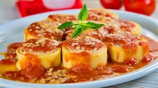

Receita do Rondelli
O rondelli com massa de pastel é uma opção deliciosa e prática
que combina a versatilidade da massa de pastel com recheios variados e
um delicioso molho. Com sua textura macia e sabor marcante, o rondelli
é apreciado por sua capacidade de agradar a diversos paladares, sendo
uma opção reconfortante e satisfatória para refeições em família ou
para receber convidados.
Tempo de preparo
-
Total: Aproximadamente 1h 1
Ingredientes
- 1 pacote de massa de pastel
- 300 g de presunto
- 1 lata (350 g) de massa de tomate
- Alho
- Orégano
- 300 g de mussarela
- 250 g de requeijão cremoso
- 2 caixas de creme de leite (400 g)
- Sal
Modo de preparo
- Leve ao fogo: em uma panela o alho, a cebola, o
sal,oregano, a massa de tomate, adicione um pouco de água e
por último o creme de leite.
- Faça um molho:(o molho deve ficar um pouco liquido),
reserve.
- Abra a massa: corte no tamanho que desejar e recheie com uma colher bem cheia de requeijão, mussarela e presunto.
- Monte as rondelas: e depois corte em rodelas pequenas, repita esse
processo eté acabar a massa.
- Distribuir: as rodelas em uma forma de vidro, jogue por cima o molho reservado (as rodelas tem que ficar totalmente cobertas) e feche com papel-alumínio.
- Leve ao forno: para assar na temperatura de 180° por 45 minutos ou até a massa estar bem cozida.
NFORMAÇÃO NUTRICIONAL
A tabela abaixo mostra os valores nutricionais por por porção
| 100g |
| Valor energético (kcal) |
212 |
| Carboidratos (g) |
16 |
| Proteínas (g) |
12 |
| Sódio (mg) |
429 |